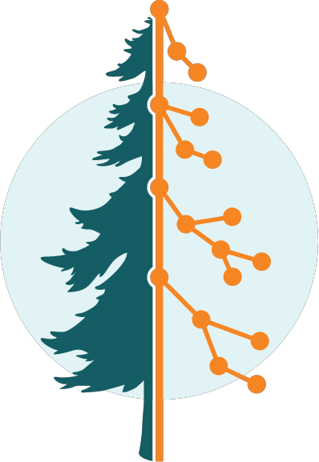
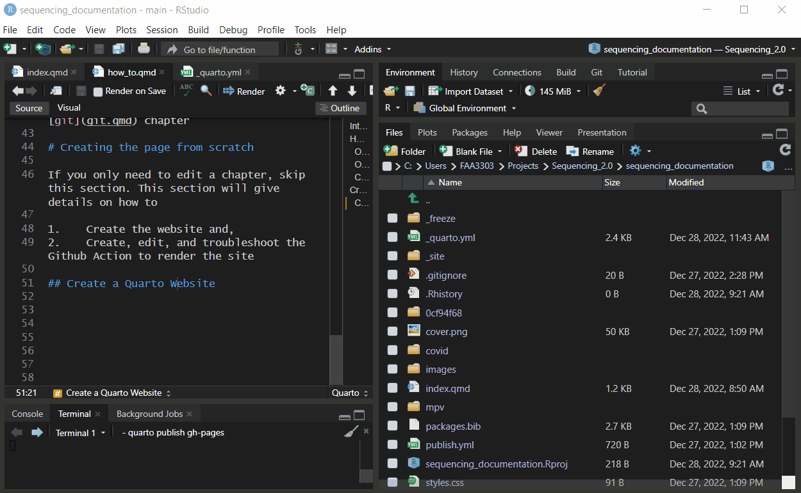
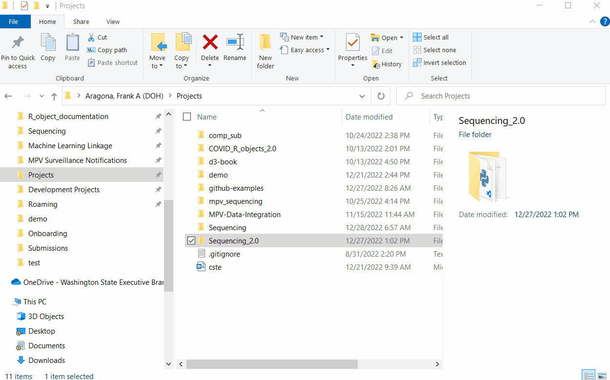
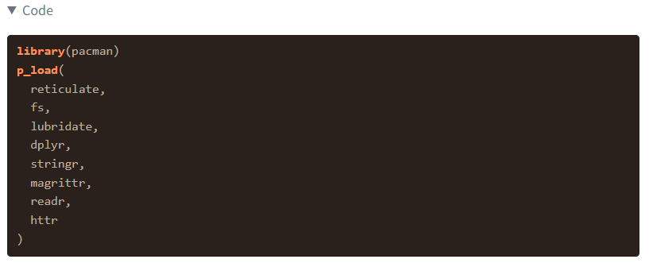

READMEs and using Github Pages and Quarto to make websites for documentation
Author
Affiliations
Frank Aragona
Washington Department of Health
Data Integration/Quality Assurance
Published
September 1, 2023
Modified
May 2, 2024
Introduction

This site was created using Quarto, Github, and uses a Github Action to automatically render when a commit is pushed to the main branch of this repository.
Quarto is a framework for creating documentation, slideshows, articles, blogs, books and websites using markdown. It can execute R, Python and other programming languages within the document.
Github Actions uses a .yml file in the repository to trigger an action based on a certain event. In this case, when a commit is pushed to the main branch the .yml will trigger this Quarto website to render to the gh-pages branch of the repository and publish the github page. This section will give details on how to
Create the website
Create, edit, and troubleshoot the Github Action to render the site
Create a Quarto Website
Go to: File > New Project… > New Directory > Quarto Website > Create Project
There is an option to use renv which is a virtual environment for the R project. This is helpful, but if you’re unfamiliar with renv you can un-check it.

The Quarto project will come with a _quarto.yml file. This is similar to an rmarkdown yml header where you can specify how you want your document to be style and what format to output it to.
How to edit the website (add chapters and change the style)
Most websites have a main file that sources all the htmls, css, javascript and other files into one. Quarto is the same - it sources all the markdown files and css files into one .yml file that dictates the output appearance and functionality of the site as a whole. Think of .yml files or headers as instructions for a document’s style, output, and functions. It is the same thing as the yaml header in rmarkdown files.
Edit/Add Sections and Chapters
To add a section, open up the _quarto.yml file and scroll to the navbar section
This is where all of the qmd files are sourced and the instructions on how to format and style the navigation bar in the website.
Currently, the project is set up to have each section have it’s own drop down menu in the navbar. In a section, use - href: to specify a file and text: to give the file a custom name in the website.
Each chapter exists within a sub-folder, so to add a chapter make sure create the qmd in its sub-folder and then reference the sub-folder and chapter in the .yml. For example, if you make a new chapter called new-chapter.qmd and it exists in the covid section/sub-folder, you need to reference it in the .yml file like: covid/new-chapter.qmd
Website Style
You can customize many aspects of the website in the .yml file itself with the format: function. There are a ton of themes included in Quarto here and you can also add a custom css and/or scss file to your project. I think you can even go super in depth and customize the javascript components of the site, but I’m not entirely sure how to do that yet. This website has a ton of custom css components with Quarto, and possibly uses custom javascript, so it could be a place to start if you’re interested. Basically, you need to embed the css file into your _quarto.yml file
First you must clone our github repository. For more information on cloning the repo, follow these instructions
Once you have a local clone you can start editing these files and push updates.
Basic steps:
Open the R Project
Open the folder/section you want to edit
Open the specific chapter in that section you want to edit (each chapter is a .qmd file)
Save the change and push to the main branch (or make a pull request to the main branch)
Once a commit is push to the main branch, it will trigger a Github Action to re-render the website and publish it to the main github repository
Open the R project
This is a Quarto website that is contained in a .rproj file path. The R project contains all the documents used to create this website. Begin by opening the R project when should be in your local clone under C:\Users\XXXXXXX\Projects\Sequencing_2.0\sequencing_documentation\sequencing_documentation.Rproj

Open the files
This project has .qmd files (Quarto Markdown files) that each represent a chapter in the website. All of the .qmd files are knitted together (using R knitr) which compiles all of the files to be sourced into htmls.
This website is set up to have each major section contain multiple chapters. To open a chapter, the bottom right pane in your R Studio window should contain folders for each section, highlighted below
The .qmd files are inside of these folders. Select one to edit.
Commit changes
Once you’re done editing, push the change to the main branch (or make a new branch, and then a pull request for the main branch). More one this in the git chapter
How to link external code to the site
The code in this website is automatically linked to the code in the repository. This lets us update the code and not need to copy and paste any new changes to the documentation/github page
To do this, open your external R script in your repo. In this case we’re using external_script.R. Now wrap the chunks of code you want to link with comments like this, ## ---- libraries and ## ---- stop:
Call the code chunk you want in the {r} header within the chunk. like this {r libraries}:
```{r libraries}```
And now the document will output any code in that code chunk and can also execute that code chunk if you want. Here’s what the output will look like in this case:

Publish the site/Github Actions
Github Actions allow you to automate tasks in your repository. Quarto has functions for Github Actions that allow you to automatically render your Quarto document and publish it to Github Pages. Github Pages is a free service from Github to host a website. Documentation for R and Python code is usually found in a Github Page within the package repository
Copy quarto-publish-example.yml to .github/workflows/quarto-publish.yml. Uncomment the “Publish to GitHub Pages (and render)” action. No further changes are needed to the action (in particular, do not edit the line below to add a secret to this file. This file has the same permissions as your repository, and might be publicly readable)
run quarto publish gh-pages locally, once
Quarto needs to configure the repository for publishing through GitHub Actions. To do this, run quarto publish gh-pages locally once.
Now, add and commit the workflow file you have just created, and push the result to GitHub. This should trigger a new action from GitHub that will automatically render and publish your website through GitHub pages.
Note that GitHub Pages uses a gh-pages branch in your repository, which will be automatically created if one doesn’t exist.
Example YAML Workflow
The .yml workflow for this project looks something like this:
on: is a tag indicating when the action will run. Right now it will run when any code gets pushed to the main branch in the documentation folder or lineages_public_repo.R script
jobs: is a tag that tells a Github virtual machine what to run and what operating system to run it on. In this case ubuntu with the latest version. This can be windows, linux or macOS.
quarto-publish.yml
name: Render and Publishjobs:build-deploy:runs-on: ubuntu-latest
Now we have the steps:
env will find the renv folder
uses: actions/checkout@v3 will refresh the repo and pull the latest changes
uses: quarto-dev/quarto-actions/setup@v2 will install quarto
uses: actions/cache@v1 and the code below it will set up renv and use the cached packages to install them onto the Github virtual machine
uses: quarto-dev/quarto-actions/publish@v2 will render the site by running quarto render
with: target: gh-pages path: documentation/_site lets you know which branch and path to render the site to
quarto-publish.yml
-name: Publish to GitHub Pages (and render)uses: quarto-dev/quarto-actions/publish@v2with:target: gh-pagespath: documentation/_siteenv:GITHUB_TOKEN: ${{ secrets.GITHUB_TOKEN }} # this secret is always available for github actions
Using renv in the GH Action
If you need to constantly update your website with code chunk, this is the best way to do it. It is also probably safer and better than the _freeze way, but it requires a better understanding of Github Actions and virtual environments.
renv is an R package for creating a project level virtual environment. In other words, renv will create project specific folders that contain the specific R package versions you use in an project. More on this here
or use the renv cache code in the yaml section above
Using a _freeze file
If you only need to execute the code once or just need to render a non-executable code chunk once, make sure you have this code in your _quarto.yml file:
_quarto.yml
execute:error:truefreeze:true
and then run this in your terminal window:
quarto render name-of-specific-document-or-chapter.qmd
This will render that specific document in the website, execute code chunks if they are set to execute (eval: true) and then it will create a _freeze file. The _freeze file will save a snapshot of that specific document and not re-render it in the Github Action. This means you can render other parts of the website, but any files in the _freeze folder will stay the same as they are in the freeze. If you need to make changes to a freeze document, run the quarto render code again after making changes.
If this works on your first try then the universe is taking extra special care of you.
If not, you are like the rest of us poor souls:/
The first thing I would check is the error in your Github repo’s Action tab.
If the error is something like jsonlite not installed or some package not installed then it most likely means your are trying to commit a chunk of code in the documentation. Even if you are not executing the code, Github Actions will punish you. There are a couple options to fix this, depending on your priorities.
If you don’t care about executing your code and/or only need to push that part of the script once, consider using the _freeze option
If you need to execute code or need to programmtically render the document with code chunks often, consider using renv or a similar package installation method